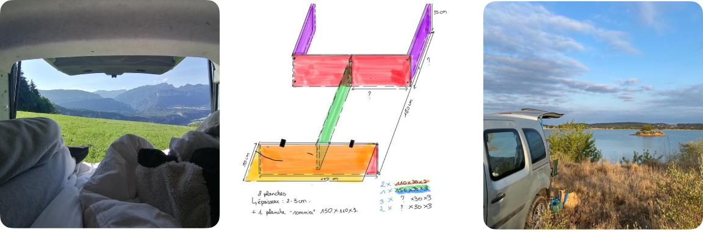

Pourquoi cette section ? Il est important pour moi de trouver un métier qui me passionne. Je reste convaincue que motivation rime avec productivité et efficacité, c’est pourquoi cette section intérêt est importante pour moi. En effet, je suis à la recherche d’un poste qui me permettra de m’épanouir et qui donnera du sens à ma vie en lien avec mes intérêts personnels.
Passions et passe-temps
Voyages
À l’étranger
Très curieuse, j’aime découvrir de nouvelles cultures et nouveaux paysages. J’ai eu la chance de faire de nombreux voyages qui m’ont beaucoup appris, que ce soit pour le professionnel ou juste pour le plaisir !

Aménagement d’un kangoo pour voyager en France !
Durant cette fameuse pandémie, j’ai pris conscience de la diversité de la France et des paysages qu’elle avait à offrir. Je me suis donc lancé le défi en février 2021 d’aménager, avec mes propres moyens, un vieux Renault kangoo familial pour partir à la découverte de mon pays!

Ma personnalité professionnelle